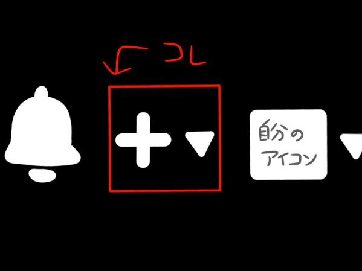
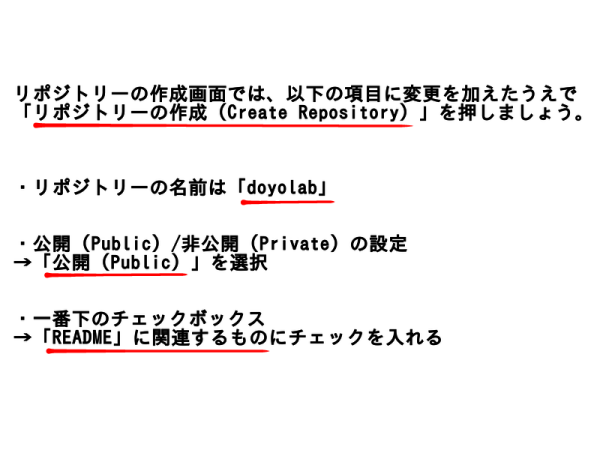
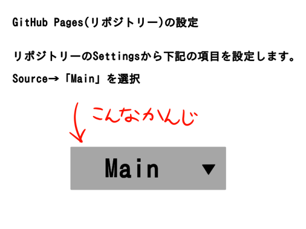
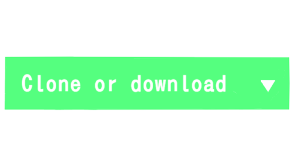

私はWindowsを利用しているため、このページを参照し、適宜インストーラーで必要項目にチェックを入れた上でインストールを完了させます。
まずは、インストール完了後のGit Bushで、Git用のフォルダを作成しましょう。
立ち上げたGit Bushに下記のコマンドを入力します。
すると、ユーザーフォルダにmygitという名前のフォルダが作成されます。
mkdir mygit
フォルダが作成出来たら、Git BushからGitの初期設定を行います。
下記のコマンドを入力して、Enterキーを押します。
git init
つぎに、メールアドレスの設定のために下記のコマンドを入力します。
有効なメールアドレスを当てはめて、入力出来たらEnterキーを押します。
git config --global user.email "自分のメールアドレス"
最後に、名前の設定のために下記のコマンドを入力します。
ここで入力する名前は公開されるものではないので、本名でも構いません。
入力出来たらEnterキーを押して、Git Bushで行う初期設定は終了です。
mkdir mygit
このページから、GitHabのアカウントを作成します。
「サインアップ」をクリックして、記入を求められた項目を埋めていきます。
この時、登録するユーザーネームは作成するサイトのURLに埋め込まれるので本名出なくてもよいです。
※設定したユーザーネーム、メールアドレス、パスワードは記録しておきましょう。
githubの右上にある+マークをクリックし、New Repositoryをクリックし、新しいリポジトリーを作ります。

下記の画像を参照して、doyolabというリポジトリーを作成します。
下の画像の項目に注意してチェックボックスにチェックを入れましょう。

リポジトリーのSettingsから設定を行います。
下記の画像の通りに選択します。

githubのdoyolabというリポジトリーの中で、下の画像のようなボタンを押してリポジトリーのURLをコピーします。

Git BushとGithubを同期させるために、mygitにリポジトリをクローンするのでGit Bushでの作業に移動します。
Git Bushを開いて、下記のコマンドでmygitフォルダに移動します。cdはchange directoryの略です
cd mygit
自分のPCにリポジトリをクローンしていきます。
Git Bushで下記のコマンドを入力し、クローンを作成します。(URLは上でコピーしたURLです。)
git clone リポジトリのURL
mygitの中にdoyolabというフォルダができて、doyolabフォルダの中にREADME.mdファイルが入っていれば成功です。
編集する際にベースとなるサンプルのページファイルが、教員から圧縮ファイルで送られてきたためダウンロードして展開します。
サンプルファイルのdoyolabの中身を、丸ごとmygit内のdoyolabの中にコピーして貼り付けます。
コピー出来ているか確認するために、Git Bushに下記のコマンドを入力しEnterキーを押します。
git status
Git Bush内に、コピーしたファイルの数と名前が間違いなく表示されれば問題ありません。
htmlファイルをdoyolabフォルダに入れたら、下記の手順でgithubへアップロードできます。
cd mygit/doyolab
(Git Bush内でdoyolabフォルダに移動するコマンド。/で階層を変える。既にアップロードしたいフォルダにいる場合は省略してよいです。)
git add .
git commit -m"メッセージ"
(メッセージ部分は更新のたびに違う文言を入れたほうが良いです。日付＋回数などで名づけましょう。)
git push
これでGithubにアクセスして自分のページに変更が反映されていたら、更新されていることが確認できます。
HTMLを編集するためのエディタをダウンロードします。
このページからインストーラーをダウンロードして、インストールを完了させます。
まずは、インストール完了後のVSCodeを起動します。最初に日本語化を行いましょう。
VSCodeのサイドバーのいちばん下、4つの四角が固まったようなアイコンをクリック。
検索ボックスに「Japanese Language Pack」と入力し、いちばん上に出てきたものをインストール･有効化して再起動します。
先程と同じく、VSCodeのサイドバーのいちばん下、4つの四角が固まったようなアイコンをクリック。
検索ボックスに「HTML Preview」と入力し、いちばん上に出てきたものをインストール･有効化します。
この機能を適用すると、HTML編集時に編集画面右上の4つのアイコンの左から2番目(Open Preview to the side)を押すことでプレビュー表示を見て作業が可能になります。
最後に、サンプルファイルをもとにHTMLを編集してみます。
VSCodeを開き、サイドバーのいちばん上を選んだ状態で、編集したいHTMLファイルを編集画面にドラッグ&ドロップします。
すると、HTMLファイル内のコードが表示されるので編集可能になります。プレビューを開きながら編集してみましょう。
サンプルファイル内のページに、Yahoo!のページに飛ぶリンクを組み込んだ自分の名前と画像を追加してみましょう。
リンク付きの文字を表示させたい場合は下記のタグを用います。
<a href="リンク先のURL">自分の名前(リンクにしたい文字列)</a>
画像をページ内に表示させたい場合は下記のタグを用います。
<img src="画像のURL">
上記2つのタグを、編集中のコードに組み込めば、プレビュー内に画像とリンク付きの文字が表示されているはずです。
HTMLファイルに変更を加えたら、このページのGitの章で前述した⑦の工程を忘れず行いましょう。
これを行わないと、本物のページに変更が反映されないので注意しましょう。
今回学んだ内容や様々なタグを用いて、今回の授業の内容を自分のページにまとめました。
HTMLファイルをコピーしてVSCodeで開き、定義コードのみ残して授業まとめページのベースとして利用しました。
授業内で作ったindexページを自分の仕様に変更し、その中に先程作った授業のまとめページへ飛べるリンクを作成しました。
【使ったタグ一覧】
■<h1>・・・</h1> 大見出し
■<h2>・・・</h2> 中見出し
■<h3>・・・</h3> 小出し
■<br> 改行
■<p>・・・</p> 段落
■<span class="blackback">・・・</span> 文字の背景色を黒くする
■<a href="リンク先のURL">・・・(リンクにしたい文字列)</a> 文字からリンクに飛べるようにする
■<img src="画像のURL"> 画像を表示